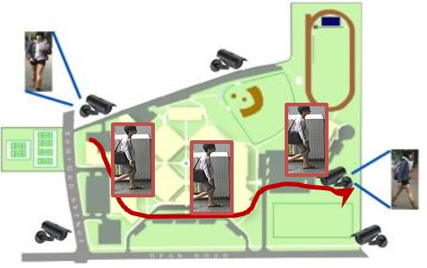
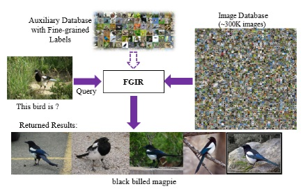
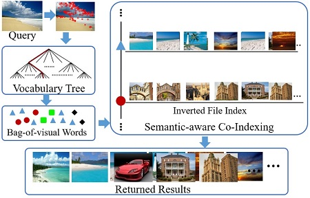
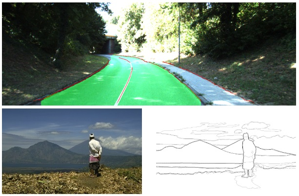

|
Shiliang Zhang
Assistant Professor
Department of Comptuer Science, School of EE&CS, Peking University
Address: Room 513/515, Yanyuan Building, Peking University, Beijing, China
Email: slzhang.jdl AT pku.edu.cn
Google Scholar Profile
|
|
|
Brief Bio: Shiliang Zhang is leading the Media and Vision Computing Group at Institute of Digital Media, Peking University. He received the Ph.D. degree from Institute of Computing Technology, Chinese Academy of Sciences in 2012 with honors. After that, he was a Postdoctoral Fellow in University of Texas at San Antonio and a Postdoctoral Scientist in NEC Labs America, Cupertino, CA.
He has authored or co-authored over 70 papers in journals and conferences, including IEEE Trans. on Pattern Analysis and Machine Intelligence (T-PAMI), IEEE Trans. on Image Processing (T-IP), IEEE Trans. on Multimedia (T-MM), ACM Multimedia, CVPR, ICCV, ECCV, IJCAI, and AAAI. His research
interests include large-scale image retrieval and computer vision. He was a recipient of the Distinguished Young Scholar Fund of Beijing Natural Science Foundation, Outstanding Doctoral Dissertation Awards from the Chinese Academy of Sciences and Chinese Computer Federation, the President Scholarship from the Chinese Academy of Sciences, the NEC Laboratories America Spot Recognition Award, and the Microsoft Research Fellowship, etc. He was a recipient of the Top 10% Paper Award at the IEEE MMSP 2011.
He serves as Associate Editor of IET Computer Vision, Guest Editor of ACM TOMM, TPC Co-chairs in CVPR and ICPR workshops, active reviewer for 20+ Journals including ACM Computing Survey, IJCV, T-PAMI, T-IP, and TPC member for 10+ top-tier conferences including ICCV, CVPR, ECCV, AAAI, IJCAI, NIPS, and ACM MM. His research is funded by the National Key Research and Development Program of China, National Natural Science Foundation of China, Beijing Natural Science Foundation, Microsoft Research, etc.
Internship and Graduate Students (both Ph.D. and Master) Opening for 2021: We are looking for self-motivated candidates who have solid mathematical backgrounds, strong English ability, and strong coding skills. If you are interested in doing research on Computer Vision and Multimedia, and want to apply your algorithms to real problems like Internet image search, autonomous driving, please send detailed CV to me.
|
| Research Highlight |
|

Person and vehicle ReID
|

Fine-grained visual categorization
|

Large-scale image search
|

Scene Understanding
|
|
| News |
- [2020. 07], one person reid paper is accepted by ECCV 2020. It uses temporal consistency to boost reid accuracy.
- [2020. 07], one paper on edge and contour detection is accepted by IEEE T-PAMI. It achieves SOTA performance with lightweight CNN.
- [2020. 06], as the leading guest editor, Dr. Zhang is co-ogranizing an ACM TOMM special issue on Fine-Grained Visual Recognition and re-IDentification! Please check the CFP and contribute!
- [2020. 06], we are ogranizing an ICPR2020 workshop: Fine-Grained Visual Recognition and re-IDentification (FGVRID)! website
- [2020. 04], The code of our CVPR 2020 papers is available. link1 link2
- [2020. 03], one paper on vehicle reid is accepted by IEEE T-CSVT.
- [2020. 02], one paper on person search is accepted by CVPR 2020. Congratulations to Yingji for his first paper!
- [2020. 02], one paper on unsupervised person reid is accepted by CVPR 2020 as oral paper. Congratulations to Dongkai for his first paper!
- [2020. 01], one paper on video person reid is accepted by IEEE T-IP. The code will be released.
- [2019. 11], the dataset and code of our ICCV19 work GLTR for person reid are available. link
- [2019. 10], one paper on vehicle reid is accepted by IEEE T-IP.
- [2019. 07], one paper on video representation learning is accepted by ICCV'19.
- [2019. 07], Longhui and Jianzhong have got their master degree! Congratulations to them and wish they have a great future!
- [2019. 06], one paper on person reid is accepted by IEEE T-PAMI. Congratulations to Jianing for his first journal paper!
- [2019. 05], one paper on person reid is accepted by IJCAI'19. Congratulations to Shunan for his first paper!
- [2019. 04], we will show our EAGER (Edge-Aided imaGe undERstanding) system at ACM ICMR'19!
- [2019. 03], one paper on edge detection is accepted by CVPR'19.
- [2019. 02], the code and model of our CDbin descriptor has been released. Please download and try: link.
- [2019. 01], our paper on binary descriptor CDbin is accepted by IEEE T-CSVT, Congratulations to Jianming for his first paper!
- [2018. 12], one paper on person reid is accepted by IEEE T-IP.
- [2018. 11], the code of our AAAI'19 paper has been released: link.
- [2018. 11], one paper on video person reid is accepted by AAAI'19.
- [2018. 08], a more complete version of GLAD is accepted by IEEE T-MM.
- [2018. 06], as one of the 12 research groups worldwild, our team received the Nvidia Pioneering Research Award at CVPR'18, Congratulations to all!
- [2018. 05], one paper on multi-object tracking is accepted by IEEE T-IP.
- [2018. 05], the slides of our FG 2018 tutorial Person Re-Identification: Recent Advances and Challenges can be downloaded: link.
- [2018. 04], the code of Person Transfer GAN (PTGAN) has been released: link.
- [2018. 04], one demo paper is accepted by ACM ICMR'18. We will show a person and vehicle Re-ID system at ACM ICMR 2018!
- [2018. 04], one paper on vehicle reid is accepted by IEEE ICME'18
- [2018. 03], one paper on person reid is accepted as Spotlight paper in CVPR '18.
- [2018. 02], we are organizing a tutorial on FG'18: Person Re-Identification: Recent Advances and Challenges. .
- [2018. 02], one paper on video emotion recognition is accepted by IEEE T-MM.
- [2018. 01], the code of our ACM MM17 work GLAD is released: link.
- [2018. 01], the dataset of our ACM MM17 work One-Shot Fine-Grained Instance Retrieval is released: link.
- [2018. 01], one paper on fine-grained visual categorization is accepted by IEEE T-IP.
- [2018. 01], one paper on attribute based person reid is accepted by IEEE T-PAMI.
|
| Recent Publications in Top-Tier Journals and Conferences
(complete list...) |
- [T-PAMI 2020]: Bi-Directional Cascade Network for Perceptual Edge Detection.
Jianzhong He, Shiliang Zhang*, Ming Yang, Yanhu Shan, and Tiejun Huang.
- [T-IP 2020]: Multi-scale Temporal Cues Learning for Video Person Re-Identification.
Jianing Li, Shiliang Zhang*, and Tiejun Huang.
- [T-CSVT 2020]: Multi-View Spatial Attention Embedding for Vehicle Re-Identification.
Shangzhi Teng, Shiliang Zhang*, Qingming Huang, and Nicu Sebe.
- [CVPR 2020 Oral]: Unsupervised Person Re-identification via Multi-label Classification.
Dongkai Wang and Shiliang Zhang*.
- [CVPR 2020]: Robust Partial Matching for Person Search in the Wild.
Yingji Zhong, Xiaoyu Wang, and Shiliang Zhang*.
- [ECCV 2020]: Joint Visual and Temporal Consistency for Unsupervised Domain Adaptive Person Re-Identification.
Jianing Li and Shiliang Zhang*.
- [T-PAMI 2019]: Pose-Guided Representation Learning for Person Re-Identification.
Jianing Li, Shiliang Zhang*, Qi Tian, Meng Wang, and Wen Gao.
- [T-IP 2019]: Group-Group Loss Based Global-Regional Feature Learning for Vehicle Re-Identification.
Xiaobin Liu, Shiliang Zhang*, Xiaoyu Wang, Richang Hong, and Qi Tian.
- [T-IP 2019]: Deep Representation Learning with Part Loss for Person Re-Identification.
Hantao Yao, Shiliang Zhang, Yongdong Zhang, Changsheng Xu, and Qi Tian.
- [T-CSVT 2019]: CDbin: Compact Discriminative Binary Descriptor Learned with Efficient Neural Network.
Jianming Ye, Shiliang Zhang*, Tiejun Huang, and Yong Rui.
- [ICCV 2019]: Global-Local Temporal Representations for Video Person Re-Identification.
Jianing Li, Jingdong Wang, Qi Tian, Wen Gao, and Shiliang Zhang*.
- [IJCAI 2019]: Resolution Invariant Person Re-Identification.
Shunan Mao, Shiliang Zhang*, and Ming Yang.
- [CVPR 2019]: Bi-Directional Cascade Network for Perceptual Edge Detection.
Jianzhong He, Shiliang Zhang*, Ming Yang, Yanhu Shan and Tiejun Huang.
- [AAAI 2019 Oral]: Multi-scale 3D Convolution Network for Video Based Person Re-Identification.
Jianing Li, Shiliang Zhang*, and Tiejun Huang.
- [T-PAMI 2018]: Multi-Task learning with low rank attribute embedding for multi-camera person re-identification.
Chi Su, Fan Yang, Shiliang Zhang*, Qi Tian, Larry S. Davis, and Wen Gao.
- [T-IP 2018]: AutoBD: Automated Bi-level Description for scalable fine-grained visual categorization.
Hantao Yao, Shiliang Zhang, Yongdong Zhang, Jintao Li, and Qi Tian.
- [T-IP 2018]: Interacting Tracklets for Multi-object Tracking.
Long Lan, Xinchao Wang, Shilinag Zhang, Dacheng Tao, Wen Gao, and Thomas Huang.
- [T-MM 2018]: GLAD: Global-Local-Alignment Descriptor for Scalable Person Re-Identification.
Longhui Wei, Shiliang Zhang*, Hantao Yao, Wen Gao, and Qi Tian.
- [T-MM 2018]: Speech Emotion Recognition Using Deep Convolutional Neural Network and Discriminant Temporal Pyramid Matching.
Shiqing Zhang, Shiliang Zhang, Tiejun Huang, and Wen Gao.
- [Pattern Recognition 2018]: Multi-type Attributes Driven Multi-camera Person Re-Identification.
Chi Su, Shiliang Zhang*, Junliang Xing, Qi Tian, and Wen Gao.
- [T-CSVT 2018]: Learning Affective Features with a Hybrid Deep Model for Audio-Visual Emotion Recognition.
Shiqing Zhang, Shiliang Zhang, Tiejun Huang, Wen Gao, and Qi Tian.
- [CVPR 2018 Spotlight]: Person Transfer GAN to Bridge Domain Gap for Person Re-Identification.
Longhui Wei, Shilinag Zhang*, Wen Gao, and Qi Tian.
- [Pattern Recognition 2017]: Attributes Driven Tracklet-to-tracklet Person Re-Identification Using Latent Prototypes Space Mapping.
Chi Su, Shiliang Zhang*, Fan Yang, Qi Tian, Wen Gao, and Larry S Davis.
- [ICCV 2017]: Pose-driven Deep Convolutional Model for Person Re-Identification.
Chi Su, Jianing Li, Shiliang Zhang*, Junliang Xing, Wen Gao, and Qi Tian.
- [ACM MM 2017]: GLAD: Global-Local-Alignment Descriptor for Pedestrian Retrieval.
Longhui Wei, Shiliang Zhang*, Hantao Yao, Wen Gao, and Qi Tian.
- [ACM MM 2017]: One-Shot Fine-Grained Instance Retrieval.
Hantao Yao, Shiliang Zhang*, Yongdong Zhang, Qi Tian.
|
|